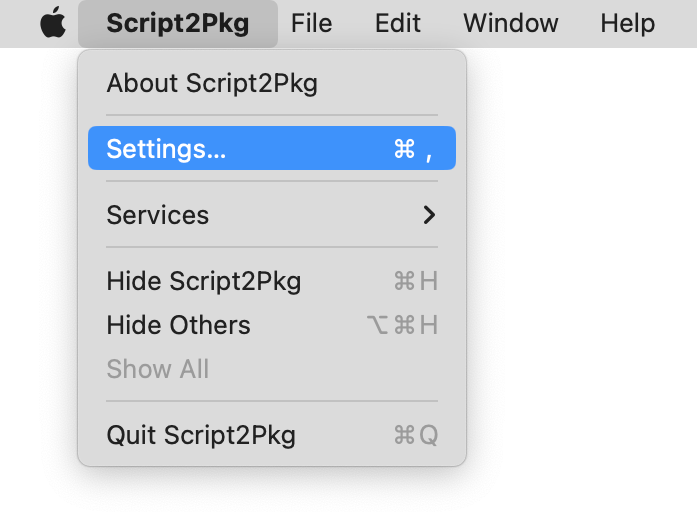

Script2Pkg
Script2Pkg
Script2Pkg
Creating distribution packages
By default, installer packages created by this tool are component packages, but you can set the tool to create distribution packages instead of component packages. Distribution packages are a special format of installer packages and Apple requires their use in place of using component installer packages in certain circumstances. For more information on component and distribution packages, please see the Glossary .
If you need to create distribution packages, use the following procedure:
1. Go to the Script2Pkg menu and select Settings…

2. Select the Packaging option.

3. Enable the Create distribution packages option.
Reverting to Default Settings
To reset back to the default settings, uncheck the Create distribution packages option.